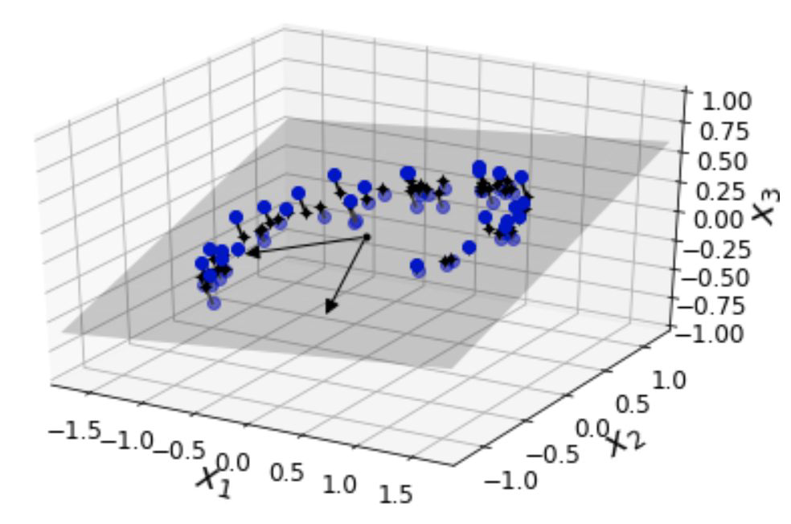

Introduction to Data Science & ML#
Understanding concepts for Data Science and Machine Learning#
What is Data?
What is (not) Machine Learning?
What is AI? and what is it good for?
Who does what in data?
Becoming a Data Scientist
What is data?#
Once upon a time#
data generated from human interaction with each other or situations they faced
Now#
everything can be data:
a click, walking with your phone, opening zoom, accessing a website, the weather, buying something online, paying by card
we both produce data and are clients for the data systems.. which collect our data
Data Lifecycle#
interaction - collection - transformation - enriching - modeling - getting insights - improving the application
What is “NOT machine learning”?#
Which problems can be solved by “NOT machine learning”#

Which problems can be solved by “NOT machine learning”#
Demystify the term “Machine Learning”. Many problems don’t require ML, but can be solved by writing a simple algorithm. Let’s look at 3 variations of the cookie monster problem.
Algorithm definition#
“A finite set of unambiguous instructions that, given some set of initial conditions, can be performed in a prescribed sequence to achieve a certain goal and that has a recognizable set of end conditions.”
In the examples above the Machine is not learning, it’s doing what you told it to. So who’s doing the “learning”?
“Learning” - the act, process, or experience of gaining knowledge or skill.
The algorithms we discussed so far were prescriptive and didn’t exhibit learning.
Uncertainty#
A deterministic system is one in which the occurrence of all events is known with certainty. If the description of the system state at a particular point of time of its operation is given, the next state can be perfectly predicted.
A probabilistic system is one in which the occurrence of events cannot be perfectly predicted. Though the behavior of such a system can be described in terms of probability, a certain degree of error is always attached to the prediction of the behavior of the system.
Heuristics / base model#
A heuristic is an approach to problem-solving or self-discovery using ‘a calculated guess’ derived from previous experiences.
Heuristics are mental shortcuts that ease the cognitive load of making a decision.
Usually, the opposite process to heuristics is the application of algorithms. Algorithms involve calculated answers and guesswork is eliminated.
What if the system is non-determinstic and also highly complex?#
It is difficult to understand what the rules are.
The rules are too complex to write down.
There are too many rules.
Rules sometimes apply and sometimes don’t and you don’t know when or why.
You have tried heuristics and they don’t work well.
Perhaps the machine can figure it out?#
If it’s too much for you to figure out, perhaps the machine could?
Machine Learning is a tool to deal with uncertainty in probabilistic systems#
Use it when you have exhausted all other options and not because you don’t yet have the solution for a deterministic problem.
Do NOT solve deterministic problems with Machine Learning#
Using Machine Learning introduces complexity and overheads that can only be justified if they are absolutely necessary
What is AI?#
What is AI?#
It’s not the Terminator
It is a branch of Computer Science!! with subdomains
What is AI?#
Narrow AI: real AI .. math / computational statistics on steroids .. solves one task
General AI: imaginary AI .. killer robots, paperclip machine (decides to build paper clips and drowns all mankind)
Technochauvinism: believing that all problems can be solved by tech
Meredith Broussard, Artificial Unitelligence
we work with narrow. movies are about general.
How can Machine learning help?#
Smarter weather prediction and agriculture
Energy optimization
Self-driving cars
AI in healthcare / Drug discovery
Finance / Fraud detection
On-demand language translation
What can we do with it?#
Predict if a product will sell or not
Demand prediction for a service
Traffic prediction
Predicting when a large system will break.. a ship, a train and so on
Winning a game of chess
Hot topics: GPT-3#
https://www.theverge.com/21346343/gpt-3-explainer-openai-examples-errors-agi-potential
Generative Pre-trained Transformer 3 is an autoregressive language model released in 2020 that uses deep learning to produce human-like text. Given an initial text as prompt, it will produce text that continues the prompt.
How can AI be dangerous?#
Autonomous weapons
Social manipulation
Invasion of privacy and social grading
Recruiting
Amplifies discrimination
check out Coded Bias on Netflix
When MIT Media Lab researcher Joy Buolamwini discovers that facial recognition does not see dark-skinned faces accurately, she embarks on a journey to push for the first-ever U.S. legislation against bias in algorithms that impact us all.
AI - Effect on Society#
AI and discrimination - PULSE AI#
Awful AI#
Where does bias come from?#
Who is contributing to the data?#
What we do with the data?#
Algorithms can also be biased.
Examples:
Do they care about the average?
Is the target of the model really what the system should optimise for?

Machine Learning#
Birds-Eye View#

Sources:https://datute.net/bigdata.html
Supervised Learning#
Training data (known data) includes the desired output (response) as well.
Example:
Predicting house prices based on given features like: number of rooms, bathrooms, garage space, year it was built, location, etc.
Sources: Apple, Machine Learning, Computer
Unsupervised Learning#
The training data (known data) does NOT includes the desired output (response).
Example:
Grouping costumers by purchasing behavior
Sources: Apple/Banana/And Pearple, Machine Learning, Computer, Thinking Bubble
Semi-supervised Learning#
Training data includes SOME of the desired output
Example:
Photo archive, where only some images are labeled (eg. dog, cat,person) and the majority is unlabeled.
Reinforcement Learning#
Training data has a feedback loop
Example:
autonomous video game player
Regression vs. Classification#
Sources:https://datute.net/bigdata.html
Classification vs. Regression#
Unsupervised learning: Dimensionality reduction#
Sources: Hands-on Machine Learning, Geron
Unsupervised learning: Clustering#
Sources: kslearn data set, own visualization
Deep Learning#
Deep Learning is a class of ML algorithms that uses multiple layers to progressively extract higher level features from the raw input.
For example, in image processing, lower layers may identify edges, while higher layers may identify the concepts relevant to a human such as digits or letters or faces.
Time Series Forecasting#
A Time Series is a series of data points indexed in time order. Most commonly the data points are taken at equal intervals.
Natural Language Processing#
NLP is the field dealing with how to program computers to process and analyze large amounts of natural language data.
Generative AI vs Supervised Learning#
Generative AI is mind-blowing, but remember that Supervised learning is the most profitable Machine Learning technique today. The attached image is from @AndrewYNg’s talk at Stanford University in July 2023. Supervised learning is massive, and he predicts it should double in the next few years. Generative AI should more than double, but it won’t catch up. Don’t let online hype lead you astray. Learning the fundamentals is as important as it’s always been.
Santiago Valdarrama
Also the link to Andrew Ng’s talk: https://youtu.be/5p248yoa3oE?si=DmffehuDLWa2IAFB
Who does what in data?#
many roles, which ones have you heard of?
data journalist, analytics engineer, mle, ds, da, de, data viz, data prod
let’s focus on 4 common ones (though dae is on the rise)
Data Engineer#
Tasks:
data warehouse, data lake, data infrastructure, data pipeline, data transformation and enriching, ETL, automation, software engineering
Closely related roles:
Data ops, ML ops
Key skills:
engineering, data modeling, communication
Data Analyst#
Tasks:
data warehouse, data pipeline, data transformation and enriching, ETL, data analysis, EDA, KPIs, statistics, data exploration, dashboards, visualization, communicating, assessing data products
Closely related roles:
Product Analyst, Data Scientist, Data Visualizer, (Growth Hacker…)
Key skills:
statistics, domain knowledge, communication
Data Scientist#
Tasks:
data pipeline, data analysis, KPIs, statistics, data exploration, visualization, EDA, communicating, data modeling, predicting, building data products, deep learning
Closely related roles:
Product Analyst, ML Engineer, Data Visualizer
Key skills:
algorithms, domain knowledge, communication
Machine Learning Engineer#
Tasks:
data pipeline, data analysis, data modeling, predicting, building data products, automation, software engineering
Closely related roles:
Data Scientist, Data Engineer
Key skills:
engineering, algorithms, communication
Becoming a Data Scienctist#
Data Scientist#
Tasks:
data pipeline, data analysis, KPIs, statistics, data exploration, visualization, EDA, communicating, data modeling, predicting, building data products, deep learning
Closely related roles:
Product Analyst, ML Engineer, Data Visualizer
Key skills:
algorithms, domain knowledge, communication
learn about the subject and where does your past experience fit in#
Try it out: kaggle.. zindi .. and more#
First 3 Weeks: Getting started with data#
1 |
|
2 |
|
3 |
|